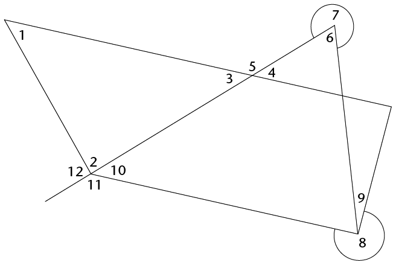
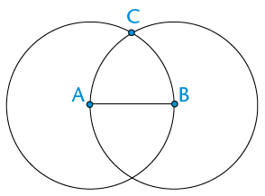
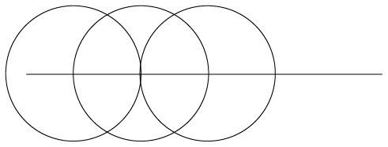
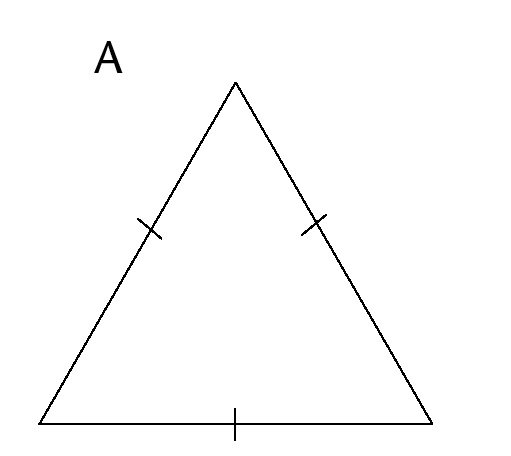
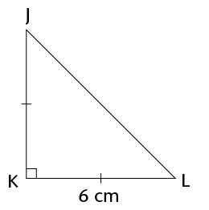
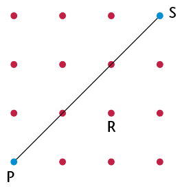

Construction of geometric figures
In this chapter, you will learn to draw geometric figures accurately. You will also explore the properties that different figures have.
Angles revision
When two lines point in different directions, we say they are at an angle to each other. If the directions are almost the same, we say the angle between them is small. If the directions are very different, we say the angle between them is big.
Words we use to describe angles:- Arms of the angle: the two lines that are at an angle to each other
- The vertex: the point where the two arms meet
- Vertices: plural of 'vertex'

Arrowheads on the lines mean that the lines keep on going. The length of an angle's arms does not change the size of the angle. Whether the arms are long or short, the angle size stays the same.
There are two angles at a vertex so it is important to show which one we are talking about
There are many different ways to label angles. Look at the examples below:
You can name the angle on the right in different ways: you can say \(A\hat{B}C\) or \(C\hat{B}A\) or just \(\hat{B}\). The 'hat' on the letter shows where the angle is.
Revision: seeing angles and describing angles
Look at the drawing on the right.

Are these lines at an angle to each other?
Do the lines have to meet to be at an angle?
-
Use a pencil and your ruler to draw the lines a bit longer so they meet. Did you change the angle between the lines when you extended them?
-
Arrange the angles from biggest to smallest. Just write the letters (a) to (f) in the correct order.
-
How can you check that an angle is a right angle without using any special mathematics equipment? (Hint: Think about where you can find right angles around you.)
-
Are these two angles the same size? Describe how you found your answer. (Hint: A piece of scrap paper may help!)
-
Two lines are drawn by holding down a ruler and drawing lines on both sides. What can you say about the two lines?

-
Look at the analogue clock face on the right. The minute hand and the hour hand make an angle. Focus on the smaller angle for now.

Explain why the angle between the hands at 8 o' clock is the same size as the angle at 4 o' clock.
-
Compare the angle at 2 o' clock with the angle at 4 o' clock. What do you notice? Why is this so?
-
Is the angle at 3 o' clock the same as the angle at a quarter past 12? Explain.
-
When you open the cover of a hardcover book you can make different angles. Can you think of at least five other situations in everyday life where objects are turned through angles? Say what the arms and the vertices are in each of your examples.


The degree: a unit for measuring angles
Imagine if we didn't have units for measuring length.
How would tailors make clothes to the right size without a tape measure? How could an architect design a safe and beautiful house without a ruler? How could we lay out a professional soccer field without being able to measure accurately in metres?
We need units and measuring instruments in many situations. You know that we use metres, centimetres, kilometres, millimetres, etc. for measuring lengths.
We should also have units for measuring angles. The units we use for measuring angles are very ancient. No one today is completely sure why, but our ancestors decided many thousands of years ago that a revolution should be divided into 360 equal parts. We call these parts degrees. The symbol for a degree is °.
Some familiar angles in degrees
Complete the table by filling in the size of each angle described.
Angle (in words)
Angle (degrees)
right angle
90°
straight angle
revolution
360°
half a right angle
a third of a right angle
a quarter of a right angle
22,5°
half a straight angle
three quarters of a revolution
a third of a revolution
Look at the clock shown. How many degrees does:

-
the minute hand move in an hour?
-
the hour hand move in an hour?
-
-
In Grade 6 you learnt that angles are classified into types. Complete the table. The first one has been done as an example for you.
Angle
Size of the angle
Sketch of the angle
Acute angle
Between 0° and 90°

Right angle
Obtuse angle
Straight angle
Reflex angle
Revolution
Comparing angles using paper
You need a sheet of A4 paper. At the corners you have four right angles. Number them and tear the corners off as shown in the diagram. Do not make them too small.
Now use your right angles to investigate the following situations:
Show that a straight angle is two right angles.
You can sketch what you have done
Show that a revolution is four right angles.
You can sketch what you have done
Create a right angle using three of your corners.
You can sketch what you have done
Describe how you can use one of your corners to check if an angle is acute, right or obtuse.
-
Fold corner 1 so that you can use it to measure 45°.
-
Fold corner 2 so that you can use it to measure 30°.
-
Fold corner 3 so that you can measure 22,5°.
-
Which is bigger: a right angle or half a right angle + a third of a right angle + a quarter of a right angle? Can you do a calculation to show that?
-
Important: Keep your folded pieces of paper for the next lesson!
Using the protractor
We have a special instrument for measuring angles. It is called a protractor. Look at the picture of a typical protractor with its important parts labelled.

Protractors can be big or small but they all measure angles in exactly the same way. The size of the protractor makes no difference to an angleâs size.
Measuring some familiar angles
You need the four folded angles from the previous activity. If you didn't do that activity, then go back now and follow the instructions in question 5.
In a group of three or four, use your protractor to measure the angles that you made: 90°; 45°; 30° and 22,5°.
-
Did you measure the correct sized angle? If not, then ask yourself the following questions:
- Did you put the vertex of the angle at the origin of the protractor?
- Is the bottom arm of your angle lined up with the base line?
- Did you fold your corners correctly?
How to use a protractor to measure an angle
Step 1: Are the angle arms long enough?
The angle arms must be a little longer than the distance from the origin of the protractor to its edge. If they are too short, use a sharp pencil and a ruler to make them longer. Be careful to line the ruler up with the arm.

Now you are ready to start measuring your angle.
Step 2: Line up the angle and your protractor
Place your protractor on top of the angle. Make sure of the following:
- the origin is exactly on the vertex of the angle, and
- the base line is exactly on top of one of the arms of the angle.
Keep adjusting the position of the protractor until the origin and the base line are exactly lined up.

Once your protractor is in the correct place keep a finger on the protractor to stop it from moving. If it moves⦠start again! You are now ready to make a measurement.
Step 3: Measure the angle
A protractor gives a clockwise degree scale and an anticlockwise degree scale. You choose the correct scale by finding the one that starts with 0° on the angle arm. Look at where the other angle arm passes under the degree scale. That is where your measurement is.

You can also place the protractor on the angle using the other arm. Then the correct position looks like this:

The angle in the pictures above is 37°. Do you agree? Do you see that there are two ways to measure an angle?
Practise measuring with a protractor
Measure the angles and complete the table on the next page. You can extend the arms if you need to; it doesn't matter if they go across text or another drawing.
Angle
(a)
(b)
(c)
(d)
(e)
(f)
Angle size in degrees
-
Measure all the numbered angles in the following figure. Some angles can be measured directly, others not. Your protractor cannot measure reflex angles like angles 7 and 8. So you will have to make a plan!
Angle
Size
1
2
3
4
5
6
7
8
9
10
11
12
Write a short note for yourself about measuring reflex angles here:


Some things to think about
Look at your answers in question 2.
How do angles 3 and 4 compare?
-
What about angles 6 and 7?
-
What about angles 4 and 5?
-
There are some interesting ideas here. Try to do some further investigation and show your teacher what you discover.
Using a protractor to construct angles
Constructing angles to a given line
Work together with a partner on this activity. You need your protractor, a sharp pencil and a straight ruler.
Your first challenge is to construct a line at exactly right angles to the one below. Begin by choosing a point on the line. You must mark this point clearly and neatly with a small dot. Then use your understanding of a protractor to draw a 90° angle.

Now fill in the missing words in the steps:
Step 1: Choose a point anywhere on the line. Make a small mark on the line. (You don't always have a choice here. Sometimes you must use a specific point on the line.)
Step 2: Place the protractor with its ______ on the line and its origin exactly on top of the ______
Step 3: Make a small, clear mark at the ______
Step 4: Use a ruler to line up the two ______ and draw a straight line that passes exactly through them.
Construct the angles using the line below. The line below will be one arm of the angles you are going to construct. The vertex for each of your angles is the point labelled O where the tiny vertical line cuts the long horizontal one. Your angles must be measured anticlockwise from the line.
-
23°
45°
65°
79°
90°
-
121°
154°
180°
200°
270°
-
300°
Angle direction
The line you have been given below is called a reference line.
Mathematicians usually measure angles anticlockwise from the reference line.

-
Use the line below. At each end you need to draw lines at an angle of 60° to form a triangle. What sort of triangle is this?

Complete the quadrilateral below. The angle at P must be 52° and the one at Q, 23°.
Parallel and perpendicular lines
Perpendicular lines meet each other at an angleof 90°.
The sketch shows two perpendicular lines.
We say: AB is perpendicular to DC.
We write: AB \(\perp\) DC

Parallel lines never meet each other. They are an equal distance apart. They have the same direction.
The sketch shows two parallel lines.
We say: PQ is parallel to RS.
We write: PQ \(\parallel\) RS
The arrows on the middle of the lines show that the lines are parallel to each other.

Constructing perpendicular and parallel lines
When constructing parallel lines, remember that the lines always stay the same distance apart. Follow the steps below to draw perpendicular and parallel lines using a protractor and a ruler.
We want to draw a line that is parallel to XY and that passes through point A.
Step 1: Draw a perpendicular line between A and XY.
Use your protractor to draw a line that goes through A and is at 90° to XY.Label the point C where your new line touches XY.Look at the sketch below if you get stuck.

Step 2: Measure the perpendicular distance between the point and the line.
Write down the length of AC:
Step 3: Draw a point that is the same distance from the line.
Draw another line that is perpendicular to line XY.Mark off the same length as AC on that line.The sketch shows what you must do.

Step 4: Draw the parallel line.
Join A with the new point that is an equal distance away from XY.You now have a parallel line.
In your exercise book, practise constructing perpendicular and parallel lines using a protractor and a ruler.
Circles are very special figures
And now for something slightly different. . . let us have a look at circles.
A circle with string
You may need to work with a partner here. You need two sharp pencils and a short length of string, an A4 sheet of paper and a ruler.
Tie the string to both pencils with double knots. The knots must be firm but not tight. The string must swing easily around the pencils without falling off. Once you have tied your string, the distance between the pencils when the string is tight should not be more than 8 cm.
-
Your partner must hold one pencil vertically with its point near the centre of the sheet of paper.
-
Now carefully move the tip of the other pencil around the middle one, drawing as you go. Try to keep the string stretched and the pencil vertical as you draw.If you have been careful, you have a circle (well, hopefully something pretty close to a circle). You can swop now so your partner also has a turn drawing while you hold the centre pencil.
-
Mark three points on the circle line. Measure the distance between the point and the centre of the circle for each. If you have a circle you should find that the distances are the same.
Think about it
Can you think of any other figure where the distance between the centre and the edge is constant in all directions?
- A square?
- A hexagon?
- What about an oval shape (ellipse)?
Do some investigation to see what you can find.
Circles are special for many reasons. The most important reason is the following:
The distance from the centre of a circle to the edge is the same in any direction.
This distance is called the radius. We pronounce this "ra-dee-us".
The plural of radius is radii. We pronounce this:"ray-dee-eye".
Do you agree that the two pencils and string are not a good way to draw circles? The string is stretchy. It is difficult to change the radius. And, the drawing pencil can wander off course and make a spiral or a wobbly curve. We need something better.
Using the compass
We need a special instrument for drawing circles. It must have a pointy tip, like the centre pencil. It must also have a drawing tip, like the pencil you moved. If you can set the distance between these two tips, you can draw circles of any radius. This instrument is called a pair of compasses, or often just a compass.

Constructing circles with a compass
At the top of the next page you will see a point labelled A. Follow the steps below and on the next page to draw a circle with a radius of 2 cm. The centre must be at A.
Step 1: Place the pointed tip on the zero line of your ruler. Carefully widen the angle between the arms. Move the pencil tip until it is exactly at 2 cm. Make sure that the pointed tip is still on zero. Be careful not to change the gap once it is set to 2 cm.
Step 2: Gently push the pointed tip into point A. Push just deep enough into the paper to keep it in place. This will be the centre of your circle.

Step 3: Hold the handle between the forefinger and thumb of your writing hand. Keep your other hand out of the way. Use only one hand when you draw a circle with a compass.
Step 4: Twist the handle between your thumb and forefinger. If you are right-handed it is easiest to twist the compass clockwise. If you are left-handed, turn anticlockwise. Let the pencil tip drag over the paper. Don't push down too hard on the pencil. Rather, push down lightly on the pointed arm as you draw. The pencil tip must move smoothly and easily.
Draw concentric circles at centre A above with radii of 3 cm, 4 cm, 5 cm and 6 cm. Set the gap carefully each time. Write the radius on the edge of each circle.
Concentric circles have the same midpoint.
Learning to use a compass is like learning to ride a bicycle. It takes co-ordination and practice. Don't be embarrassed if it goes wrong. With practice you will get very good at it. If your circles end up being all wobbly lines, just begin again!
- If your circles are turning into spirals it is because the arms of your compass have moved. Check their width again against a ruler.
- If the arms of your compass won't stay in the position you set them at, it is because the nut at the hinge below the handle is loose. Ask your teacher to help you if you can't tighten it yourself.
- If you can't do the twist, imagine you have a small piece of soft clay between your thumb and forefinger and you are trying to roll it into a small strip. The twist for turning your compass uses the same type of sliding movement. Let the compass hang from your hand in the air and twist the handle. Then try it on scrap paper a few times until you can turn the compass easily.
Circles on circles
It's time to have some fun with the compass while getting better at using it. Follow these instructions to draw the beautiful pattern shown on the right in your exercise book.

Make sure your pencil is sharp; then place it in the compass.
-
Set the radius to 4 cm. Draw a circle at the centre of your page. Important: your radius must stay the same for the whole activity.
-
Put your compass point anywhere on the circle edge. Draw another circle. This circle should pass through the centre of your first circle (they have the same radius).
-
Your second circle cuts the first circle at two points. Choose one of these points. Place your compass point at this point. Draw another circle of radius 4 cm.
-
Repeat step 3 with your third circle, fourth circle etc. You should end up with six circles on your first circle. That is, seven circles in total.
-
Decorate it as you please. (You can decorate your pattern further by adding more circles or joining points with straight lines, and so on. See what patterns and shapes you can discover among all the circles.)
Using circles to draw other figures
Geometric figures hiding in the circles
Below is a set of seven circles like the one you drew. Sit with a partner and try to find hidden polygons.
You will find these polygons by joining the points where the circles cut each other. The points will be the vertices of the polygons. Look carefully. There are triangles, quadrilaterals, pentagons and hexagons. When you can see them, neatly and carefully rule in their sides with a pencil. If there is not enough space on the set of circles below, redraw the circles on a separate piece of paper and show the figures there. If you wish, you can measure the angles at each vertex and the lengths of the sides.

Arcs of circles
We do not have to draw whole circles to construct figures. We are only really interested in the points where the circles cross each other, so we could just draw arcs where they cross. Next year, you will use arcs in your geometric constructions.
An arc is a small part of a circle. We use the term circumference when we refer to the distance around a circle or around any other curved shape.
Do the following in your exercise book:
Draw an arc using a radius of 3 cm.
-
Draw an arc bigger than a quarter circle, using a radius of 5 cm.
-
Draw an arc smaller than a quarter circle, using a radius of 5 cm.
Enrichment
Once you have finished the work in section 4.8, experiment with drawing only the arcs that you need in various constructions. Here is an example to show how to construct a regular hexagon with only arcs:

Familiar figures in the seven-circle pattern
For this activity you need five seven-circle sets like the ones drawn in the previous two activities. Start by drawing these on blank pieces of paper. Don't make your radius bigger than 4 cm. Number your sets figure 2 to figure 6. Label each figure as shown on the right.

Follow the instructions below.
- Figure 1: Use the figure alongside. Draw lines connecting AB, BC, CD,. . . up to FA.
- Figure 2: Draw lines connecting A, O and B.
- Figure 3: Draw lines connecting B, F and D.
- Figure 4: Draw lines connecting BC, CE, EF and FB.
- Figure 5: Draw lines connecting CD, DE, EF and FC.
- Figure 6: Draw lines connecting AB, BC, CE and EA.
Complete the table below.
It shows the name of each figure and its properties.
Figure 1 (on the right) has been done as an example.
Figure
Name of figure
Properties
1
Regular hexagon
6-sided figure. All the sides are equal. All the interior angles are equal.
2
3
4
5
6
Construct some more figures
Read the instructions carefully and follow them exactly.
-
Draw a line in your exercise book. The line should be between 3 and 6 cm long. Draw it in the middle of your page.
-
Label the ends A and B.
-
Place the point of your compass at point A. Carefully set the radius of your compass to the distance between A and B.
-
Draw a circle with the compass point at A.
-
Draw another circle with the compass point at B without changing the radius width.
-
The circles cross at two points. Choose one of these points. Label it C. Check that you are on the right track by comparing your sketch to the one on the right.
-
Carefully rule the lines AC and BC.
-
What sort of figure is ABC? Check this by measuring angles. Why do you think this happened?

-
Draw two lines PQ and QR in your exercise book.
- The lines meet and form an angle at Q.
- You can make your angle any size.
- Make your line lengths different.
- Do not make your lines longer than 6 cm each.
Place your compass point at point Q. Set the radius of your compass to the distance QP. Place the compass point at R. Draw a circle.

-
Place the compass point back at Q. Set the radius to the length QR. Place the compass point at P. Draw a circle.
-
The two circles cross at two points. Decide which point will be the vertex of a parallelogram. Call this point S.
-
Join the lines SP and SR. Is PQRS a parallelogram?
-
Something to think about
Why does this method form a parallelogram?
Parallel and perpendicular lines with circles
Parallel and perpendicular
Revision: Complete these definitions.
-
When one line is parallel to another line, the lines
-
When one line is perpendicular to another line, the lines
-
-
A seven-circle figure has been drawn below. The intersection points have been marked. A line segment has been drawn in. Use a ruler and pencil to join pairs of points so that the lines are:
-
parallel to the line segment
-
perpendicular to the line segment.

When two lines (or arcs) cross each other we say they intersect.
The intersection point is the place where they meet.
You should have drawn 7 lines (2 parallel and 5 perpendicular to the line segment).Compare your lines with a friend's lines. Do you agree?
-
-
In your exercise book, draw a few circles with the same radius along a line. Start by drawing a line. Then use your compass to draw a circle with the midpoint on the line.
Keep your compass the same width and draw another circle with the centre where the first circle crossed the line. Repeat as many times as you wish. In the example at the bottom of the previous page only three circles have been drawn.
-
Can you find that example in the seven-circle figure? Look carefully until you see it.
-
Can you see where you can construct lines that are perpendicular to the given line? Draw them carefully with a pencil and your ruler.
-
Can you see the two lines that are parallel to the given line? Draw them in too.
-
-
Use circles to construct a line that is perpendicular to the line below.

Use circles to construct a line that is parallel to the line below.

Extension
Set your compass at a certain distance, for example 3 cm, and investigate points that are the same distance from a fixed point, P.

Use your compass and investigate all the points that are at the same distance, for example 3 cm, from two fixed points, A and B.
Geometry of shapes
In this chapter, you will learn about different kinds of 2D shapes. You will learn the names given to different shapes. You will also learn about the different properties that different types of shapes have in relation to their sides and angles.
Triangles, quadrilaterals, circles and others
Decide which is which and draw some figures
A triangle is a closed figure with three straight sides and three angles.
A quadrilateral has four straight sides and four angles.
A circle is round and the edge is always at the same distance from the centre.

Which shapes on the opposite page are circles?
-
Which shapes on the opposite page are triangles?
-
Which shapes on the opposite page are quadrilaterals?
Use your ruler to do the following:
Make a drawing of one triangle with three acute angles, and another triangle with one obtuse angle.
-
Draw a quadrilateral with two obtuse angles.
-
Can you draw a triangle with two obtuse angles?
-
-
-
Draw a triangle with one right angle, and a triangle without any right angles.
-
Can you draw a triangle with two right angles?
-
Can you draw a quadrilateral with four right angles?
-
-
These four lines form quadrilateral ABCD.
The two red sides, BC and AD, are called opposite sides of quadrilateral ABCD.
Which other two sides of ABCD are also opposite sides?
-
The lines DA and AB in the figure in question 7 are called adjacent sides. They meet at a point that is one of the vertices (corner points) of the quadrilateral.
-
Name another two adjacent sides in ABCD.
-
AB is adjacent to DA in the quadrilateral ABCD. Which other side of ABCD is also adjacent to DA?
-
-
William says:
"Each side of a quadrilateral has two adjacent sides.
Each side of a quadrilateral also has two opposite sides."
Is William correct? Give reasons for your answer.
-
William also says:
"In a triangle, each side is adjacent to all the other sides."
Is this true? Give a reason for your answer.
-
In each case, say whether the two sides are opposite sides or adjacent sides of the quadrilateral PQRS.

QP and PS
-
QP and SR
-
PQ and RQ
-
PS and QR
-
SR and QR
Different types of triangles
Equilateral, isosceles, scalene and right-angled triangles
A triangle with two equal sides is called an isosceles triangle.
A triangle with three equal sides is called an equilateral triangle.
A triangle with a right angle is called a right-angled triangle.
A triangle with three sides with different lengths and no right angle is called a scalene triangle.

Measure every angle in each of the isosceles triangles given above. Do you notice anything special? If you are not sure, draw more isosceles triangles in your exercise book.
-
Measure the angles and sides of the following triangles. What is special about these triangles? In other words, what makes these triangles different to other triangles?

These triangles are called equilateral triangles.
Measure each angle in each of the following triangles. Do you notice anything special about these angles?

-
Identify the longest side in each of the triangles. If you are not sure which one is the longest side, measure the sides. What do you notice about the longest side in each of these triangles?
These triangles are called right-angled triangles.
Comparing and describing triangles
When two or more sides of a shape are equal in length, we show this using short lines on the equal sides.
Use the following triangles to answer the questions that follow:



Which triangle has only two sides that are equal?
What is this type of triangle called?
-
Which triangle has all three sides equal?
What is this type of triangle called?
-
Which triangle has an angle equal to 90°?
What is this type of triangle called?
Write down the type of each of the following triangles in the space provided:
Finding unknown sides in triangles
-
Name each type of triangle below.


Use the given information to determine the length of the following sides:
AB:
BC:
EF:
-
Can you determine the lengths of GH and HI? Explain your answer.
-
The square in the corner of \(\triangle\)JKL shows that it is a right angle. Give a reason for each of your answers below.
Is this triangle scalene, isosceles, or equilateral?
-
Name the two sides of the triangle that are equal.
-
What is the length of JK?
-
Name two equal angles in this triangle.
-
What is the size of \(\hat{J}\) and \(\hat{L}\) ?
Different types of quadrilaterals
Investigating quadrilaterals
The two pages that follow show different groups of quadrilaterals.
-
In which groups are both pairs of opposite sides parallel?
-
In which groups are only some adjacent sides equal?
-
In which groups are all four angles equal?
-
In which groups are all the sides in each quadrilateral equal?
-
In which groups are all four sides equal?
-
In which groups is each side perpendicular to the sides adjacent to it?
-
In which groups are opposite sides equal?
-
In which groups is at least one pair of adjacent sides equal?
-
In which groups is at least one pair of opposite sides parallel?
-
In which groups are all the angles right angles?
-
-
The figures in group 1 are called parallelograms.
-
What do you observe about the opposite sides of parallelograms?
-
What do you observe about the angles of parallelograms?
-
-
The figures in group 2 are called kites.
What do you observe about the sides of kites?
-
What else do you observe about the kites?
Group 1

Group 2

Group 3

Group 4

Group 5

Group 6

The figures in group 3 are called rhombi.
-
What do you observe about the sides of rhombi?
-
What else do you observe about the rhombi?
Note: One rhombus; two or more rhombi.
-
-
The figures in group 4 are called rectangles.
-
What do you observe about the opposite sides of rectangles?
-
What do you observe about the angles of rectangles?
-
What do you observe about the adjacent sides of rectangles?
-
-
The figures in group 5 are called trapeziums. What do you observe about the opposite sides of trapeziums?
The arrows show which sides are parallel to each other.
-
The figures in group 6 are called squares.
-
What do you observe about the sides of squares?
-
What do you observe about the angles of squares?
-
Comparing and describing shapes
Name each shape in each group.
Group A


Group B


In what way(s) are the figures in each group the same?
Group A:
Group B:
-
In what way(s) does one of the figures in each group differ from the other two figures in the group?
Group A:
Group B:
Finding unknown sides in quadrilaterals
Use what you know about the sides and angles of quadrilaterals to answer the following questions. Give reasons for your answers.
-

-
What type of quadrilateral is ABCD?
-
Name a side equal to AB.
-
What is the length of BC?
-
-

-
What type of quadrilateral is EFGH?
-
What are the lengths of the following sides?
EF:
GH:
-
-

-
What type of quadrilateral is JKLM?
-
What is the length of JK?
-
-
Figure PQRS is a kite with PQ = 4 cm and QR = 10 cm. Complete the following drawing by:
-
labelling the vertices of the kite
-
showing on the drawing which sides are equal
-
labelling the length of each side.
-
Circles
-

-
Make a dot in the middle of the circle on the right. Write the letter M next to the dot. If your dot is in the middle of the circle, it is called the midpoint or centre.
-
Draw lines MA, MB and MC from M to the red points A, B and C.
The three red points are on the circle with midpoint M.
A straight line ,such as AC, drawn across a circle and passing through its midpoint is called the diameter of the circle.
-
-
Measure MA, MB and MC.
If MA, MB and MC are equal in length, you have chosen the midpoint well.If they are not equal, you may wish to improve your sketch of a circle and its parts.
A straight line from the midpoint of a circle to a point on the circle is called a radius of the circle.
The blue line, MA ,is a radius. Any straight line from the centre to the circle is a radius.
The black line AB joins two points on the circle. We call this a chord of the circle.

In the following two diagrams, the coloured sections are segments of a circle. A segment is the area between a chord and an arc.


In the circle on the right, the red section is called a sector of a circle. As you can see, a sector is the region between two radii and an arc.
Similar and congruent shapes
Three groups of quadrilaterals are shown on this page and the next.
What makes each group different from the other groups, apart from the colours?
Group A:
-
Group B:
-
Group C:
Group A

Group B

Group C

Shapes that have the same form, such as the blue shapes on the previous page, are said to be similar to each other. Similar shapes may differ in size, but will always have the same shape.

Example of similar shapes

Example of congruent shapes
Are the red shapes on the previous page similar to each other?
-
Look at groups D, E, F, and G on this page and the next. In each case say whether the shapes are similar and congruent, similar but not congruent, or neither similar nor congruent.
Group D:
-
Group E:
-
Group F:
-
Group G:
Group D

Group E

Group F

Group G

Term revision and assessment
Revision
You should not use a calculator for any of the questions in this section. Do show your steps of working.
Working with whole numbers
Make the number sentences below true. Into the first block in each question, write a multiplication or division sign. Into the second block, write either 10, 100 or 1 000.
-
8 ☐ ☐ = 800
-
740 000 ☐ ☐= 740
-
-
Circle all the numbers given below that will round off to 60 000.
62 495; 54 498 ; 65 000; 56 002 ; 67 024
-
Calculate the following:
-
\(274 561 + 367 238\)
-
\(4 672 - 3 937\)
-
\(3 458 \times 43\)
\(6 624 \div 18\)
-
-
Write the missing numbers in the blocks.
-
8; 15; 22; 29; ☐
-

-
-
Tumi makes a sequence of numbers using the following rule: "Take half the previous number and then add 12." Write the next three numbers in the sequence:
56; 40; 32;
-
Two three-digit numbers are added together as shown, and produce a three-digit answer - but some of the digits are missing. Fill in the missing digits so as to make the calculation correct.
59 ☐+ 3 ☐9=☐53
-
Ismail has the following numbers:
71; 72; 73; 74; 75; 76; 77; 78; 79; 80
He wishes to sort them by placing them in the sorting diagram below. Help Ismail by placing the numbers in the correct blocks.
Prime number
Not a prime number
Multiple of 4
Not a multiple of 4
-
Write down, using only numbers from the cloud:
-
All the prime numbers
-
All the square numbers
-
All the cube numbers
-
All the multiples of 8
-
All the factors of 8
-
-
Teacher Ramushwana states:
"Every even number (greater than or equal to 6) can be written as the sum of a
pair of odd prime numbers, for example \(10 = 3 + 7\)."
-
Write down two pairs of odd prime numbers that each sum to 20.
-
Choose any even number greater than 30 and write it as a sum of two odd prime numbers.
-
-
Write the following as a product of prime factors:
-
576
-
600
-
-
Find both the (i) HCF and (ii) LCM of 576 and 600.
-
HCF
-
LCM (leave your answer as a product of prime factors)
-
-
-
How many hours will it take the Adams family to reach their holiday destination if it is 495 km away and they travel at an average speed of 110 km/h?
-
Graeme, Thuli and Andile have worked as a team over the holidays, mowing the lawns of their neighbours. They collected a total of R1 200 and now need to share it. They agree that as they didn't all work an equal amount, the money should be shared between Graeme, Thuli and Andile in the ratio 4 : 6 : 5. How much money will Thuli receive?
-
Mr Khumalo decides to try to make some money buying and selling used furniture. He has R6 000 in his bank account, and uses some of the money to buy an old bed base and mattress for R800, a dresser for R2 500, two lockers for R300 each, and a washing machine for R900.
-
How much is left in his bank account after these purchases?
-
Suppose that he sells the bed base and mattress for R980, the dresser for R2 950, and both lockers for a total of R750. Nobody seems to want his washing machine though. At this stage he has made a loss. What is the value of the loss?
-
How much does he need to sell the washing machine for to have an overall profit of R1 000?
-
-
Mrs Steyn takes out a loan of R55 000 from Fidelity Bank. The bank charges simple interest of R500 per month. How much money will Mrs Steyn owe after \(1\frac{1}{2}\) years?
-
John earns R480 on a Saturday. He works from 08:00 to 14:00. Calculate his hourly rate.
Exponents
Calculate.
-
\(12 \times 12\)
-
\( 8 \times 8 \)
-
\( 7 \times 7 \times 7\)
-
\( 3 \times 3 \times 3 \)
-
\( 6 \times 6 \times 6 \)
-
\( 13 \times 13 \)
-
-
Explain the difference between \(4 \times 3\) and \(4^3\).
-
Write \( 5^5\) in expanded form.
-
Write the following in exponential form:
-
\( 2 \times 2 \times 2 \)
-
\( 3 \times 3 \times 3 \times 3 \times 3 \times 3 \times 3 \times 3 \)
-
-
Write the numbers in exponential form. Check your answers.
-
81
-
10 000
-
-
Complete:
- 5 squared is
-
5 cubed is
- 5 squared is
-
Calculate:
-
\( 7^2\)
-
\( 15^2\)
-
\(3^2 \times 4^2 \)
\(\sqrt{16}\)
-
-
Are the following statements true or false? Explain your answers.
-
The number 64 can be written both as a square and a cube.
-
\( 2^5\) is smaller than \(30^1\).
-
-
Calculate the following and give reasons for your answers.
-
\(\sqrt[3]{216}\)
-
\(\sqrt[3]{8}\)
- \(\sqrt[3]{125}\)
-
\(\sqrt[3]{27}\)
-
-
Determine the value of each of the following:
-
\( 3^2-2^3\)
\(4(10 - 1^{100})\)
\((8-2)^2\)
\(\sqrt{4} \times \sqrt{81}\)
- \((\sqrt{58})^2\)
\(\sqrt[3]{27} \div \sqrt{9}\)
\(10 \times \sqrt{81}\)
- \(\sqrt{2
\times 32}\)
-
-
\(13=169; 14^2 =196; 15^2=225; 16^2=256; 7^3=343; 8^3=512; 3^3=27\)
Use these facts to calculate the value of each of the following:
-
\(\sqrt{196}-\sqrt[3]{512}\)
-
\(\sqrt{169 \times 225}\)
- \(\frac{\sqrt{196}}{\sqrt[3]{343}}\)
\(\frac{14^2- 13^2}{3^3}\)
-
-
If \(56^3= 175 616\), write down the value of \(\sqrt[3]{175 616}\).
Geometry of straight lines
-
Consider the grid shown alongside.
-
Is PS a line, ray or line segment?
 -
Draw on the grid a line segment through R that will be perpendicular to PS. Label it TU.
-
Draw on the grid a line that is parallel to PS. Label it WX.
-
-
Provide the correct name for each of the geometric features AB and CD, shown on the diagram:

AB:
CD:
-
There is a geometric relationship between line segments PR and QS shown in the diagram. Describe the relationship by adding the correct word on the dotted line:

PR is ____________ QS.
-
Draw a ray and a line that will never meet.

Construction of geometric figures
Use a protractor to accurately measure the following angles, as shown on the diagram below, and write the answers in the table provided:
-
\(\hat{B}\)
\(A\hat{D}B\)
\(D\hat{A}B\)
\(C\hat{D}B\)
reflex \(C\hat{A}B\)

Angle name
Size
Classification
\(\hat{B}\)
\(A\hat{D}B\)
\(D\hat{A}B\)
\(C\hat{D}B\)
Reflex \(C\hat{A}B\)
Reflex
-
Construct a semi-circle with a radius of 3 cm.

-
Use a ruler and protractor to construct angles that are the given sizes. Label the angles correctly.
-
\(E\hat{F}G = 152^{\circ}\)
\(X\hat{Y}Z = 289^{\circ}\)

-
-
Use circles to construct two lines, CD and EF, that are parallel to line AB below. Line CD should be above line AB, and line EF below line AB. Label both lines.

Consider the diagram alongside.Write down the names of the pair of perpendicular lines.

Geometry of shapes
Give the full name of the shape that fits the given descriptions:
-
A three-sided shape that has exactly two sides equal in length
-
A four-sided shape with both pairs of opposite sides parallel and equal in length, and with no right angles
-
A four-sided shape with only one pair of opposite sides parallel
-
-
What is the correct term for each of the following parts of the circle with centre B, as shown alongside?

Line AB
-
The shaded area
-
On the square grid alongside, two sides of a kite have been drawn. Use a ruler and complete the kite on the grid.

-
Darrel says, "The four-sided shapes I am thinking of have at least one pair of adjacent sides equal. What are they?" Write down the names of all the shapes that fit his description.
-
DEFG is a kite, and DE = 4 cm and EF = 5,2 cm. Write down the lengths of DG and GF.
-
STUV is a rectangle. Write down the value of \(\hat{T} + \hat{V}\). Give a reason for your answer.
-
Consider the diagram alongside.

Write down the letters of all the shape(s) that are congruent to shape B.
-
Write down the letters of all the shape(s) that are similar to shape B.
-
An isosceles triangle, LMN, has LM = 4 cm and a perimeter of 16 cm. Investigate and write down all the possible lengths of MN and LN.
-
In each case say whether the two sides are opposite sides or adjacent sides of quadrilateral DEFG.

GD and DE
-
DE and GF
Assessment
In this section, the numbers indicated in brackets at the end of a question indicate the number of marks that this question is worth. Use this information to help you determine how much working is needed.
The total number of marks allocated to the assessment is 60.
Note:
Do not use your calculator!
Here are five one-digit cards:

Two-digit numbers can be made by placing two cards next to each other - so, for example, taking the 1 and the 2 and putting them next to each other will create the number 12 (twelve).
Choose two cards each time to make the following two-digit numbers:
An odd number
-
A multiple of 9
-
A factor of 126
-
A square number
-
Ayanda has a pack of cards numbered from 1 to 16. He chooses four cards at random from the pack:
- One is a factor of 39.
- Two are multiples of 4.
- Three are even.
- The total of the four numbers is more than 45, but less than 50.
Write down the values of the four numbers.
-
All 769 learners from the Sibanye Primary School are going to an athletics meeting. The school hires buses from a local company. Each bus can take only 52 passengers, and each bus has to have two teachers on board. How many buses will the school have to hire to get everyone to the meeting?
-
Calculate the total number of test wickets taken by the top four wicket takers in the Proteas' cricket history (figures correct as at June 2013):
- Shaun Pollock: 421
- Makhaya Ntini: 390
- Dale Steyn: 332
- Allan Donald: 330
-
Use prime factors to find the LCM of 42 and 18.
-
Dintle's family needs to get to Polokwane, 330 km away, by 11 a.m. If they leave at 7.40 a.m. and drive at an average speed of 100 km/h, will they reach their destination on time? Show all your working.
-
Determine the value of each of the following:
-
\( 6^3 - (7^2 + 6^2)\)
-
\((8-5)^3\)
-
\((\sqrt[3]{125})^2\)
-
\(12^2 - 4\sqrt{121} \div 2^2\)
-
\(3\sqrt{64}\)
-
-
-
Write down the letters of all the acute angles in the diagram.

-
Measure the size of angle \(d\) in the diagram and write it down.
-
Classify angle \(d\) according to its size.
-
-
Draw and correctly label angle \(K\hat{L}M = 168^{\circ}\).

Use your ruler and protractor to draw a line that is parallel to line segment FG drawn below, and goes through point H.

Four circles are drawn so that they fit neatly into a square with side length of 6 cm, as shown (not to scale). Write down the radius of each circle.

-
-
What is the geometrical name of the shape shown on the dot grid below?
-
Draw two shapes that are similar to the shape shown, anywhere on the grid. Each shape that you draw should have a different size.

-
-
The following diagram shows a square drawn on a dot grid. The square is divided into four triangles, namely A, B, C, and D.

-
Write down the letters of all the right-angled triangles.
-
Write down the letters of all the isosceles triangles.
-
Write down the letters of the two congruent triangles.
-
-
I am a quadrilateral with two pairs of opposite sides equal, no adjacent sides equal, and no right angles. What shape am I?
-
What is the special name we give to the perimeter of a circle?
-
Draw a rhombus of any size on the dot grid below. Add appropriate symbols on the diagram to show that the opposite sides of a rhombus are parallel.

In trapezium JKLM, JK is parallel to the opposite side.
Complete the statement:
JK ||
-
Study the following diagram:

Cross out the incorrect word or symbol in each set of brackets:
AD is (parallel/perpendicular) to BC. This can be shown in symbols as follows:
(AD \(\perp\) BC / AB || BC).